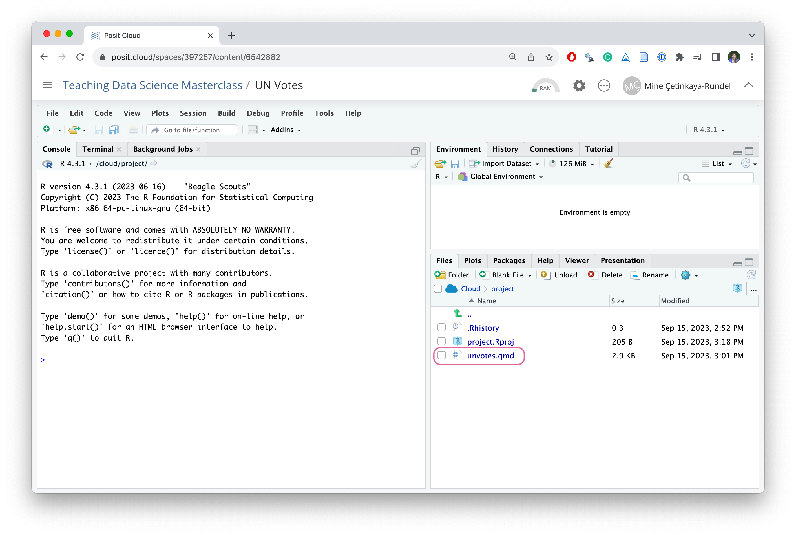
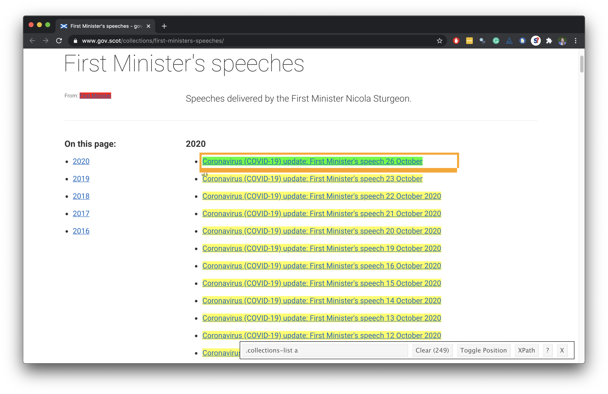
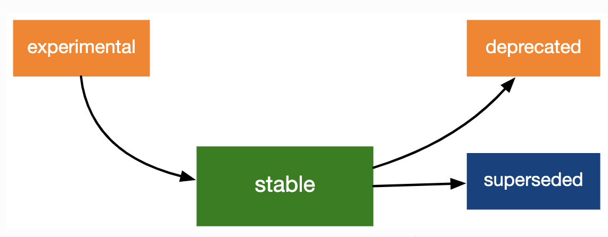

Teaching data science with the tidyverse and Quarto
posit::conf(2023)
Teaching Data Science Masterclass
Welcome
Introductions

Dr. Mine Çetinkaya-Rundel
Profeesor, Statistical Science, Duke University
Developer Educator, Posit
Tracy Teal,
Open Source Program Director, Posit
Michele Peruzzi,
Assistant Professor, Biostatistics, University of Michigan
George Stagg,
Software Engineer, Posit
Workshop materials

One link for all materials
Schedule
| Time | Activity |
|---|---|
| 09:00 - 10:30 | Teaching data science with the tidyverse and Quarto |
| 10:30 - 11:00 | Coffee break |
| 11:00 - 12:30 | Teaching data science with Git and GitHub |
| 12:30 - 13:30 | Lunch break |
| 13:30 - 15:00 | Computing infrastructure for teaching data science |
| 15:00 - 15:30 | Coffee break |
| 15:30 - 17:00 | Organizing, publishing, and sharing of course materials |
WiFi
Username: Conf 2023
Password: conf2023
Code of Conduct
The Code of Conduct and COVID policies can be found at https://posit.co/code-of-conduct.
Please review them carefully. You can report Code of Conduct violations in person, by email, or by phone. Please see the policy linked above for contact information.
Other useful info
There are gender-neutral bathrooms located are among the Grand Suite Bathrooms.
There are two meditation/prayer rooms: Grand Suite 2A and Grand Suite 2B. Open Sunday - Tuesday 7:30 a.m. - 7:00 p.m., Wednesday 8:00 a.m. - 6:00 p.m.
The lactation room is located in Grand Suite 1. Open Sunday - Tuesday 7:30 a.m. - 7:00 p.m., Wednesday 8:00 a.m. - 6:00 p.m.
Participants who do not wish to be photographed have red lanyards; please note everyone’s lanyard colors before taking a photo and respect their choices.
Asking for help (Stickies)
I’m stuck
I’m done

I have a general question
Discord
You should have received an email with an invitation and instructions for joining the conference’s discord server.
This workshop has a private channel under Workshops:
#teaching-data-science-masterclassThis is a great place to ask questions, share responses to exercises, post resources, memes, or most anything else before, during, and after the workshop.
Computational Environment
Posit Cloud
You can use the following link to join the workshops Posit Cloud space,
Once you have joined, navigate to Projects on the top menu.
Using your own system
If you’d like to use your own system, please see posit-conf-2023.github.io/teach-ds-masterclass/#install
Introductory data science curriculum design
Doing data science

Teaching data science
Day one
Day one
- Go to Posit Cloud and start the project titled UN Votes
Day one
Go to Posit Cloud and start the project titled UN Votes
Open the Quarto document called
unvotes.qmd

Day one
Go to Posit Cloud and start the project titled UN Votes
Open the Quarto document called
unvotes.qmdRender the document
Day one
Go to Posit Cloud and start the project titled UN Votes
Open the Quarto document called
unvotes.qmdRender the document
Review the data visualization you just produced
Your turn!
Change
Turkeyto a different country and render the document againReview how the voting patterns of the country you picked compare to the United States and the United Kingdom
Then, introduce yourself to your neighbor and discuss why you chose your country and what, if anything, surprising or expected you saw in the visualization you produced
In the remaining time, continue the introduction:
- Affiliation and/or where you’re joining from (geographically)
- Where you are in your teaching (or learning) journey
- Your favorite thing to teach
Rest of semester
Components
- Content in three examples
- Pedagogy
- Tooling
Fisheries of the world
Starting point
Data
Your turn!
Open the Posit Cloud project titled Fisheries of the world and work through the exercises that guide you through visualizing percentage of aquaculture across continents. Render the document after each exercise.
10:00
Concepts
- data joins
Concepts
# A tibble: 3 × 5
country capture aquaculture total continent
<chr> <dbl> <dbl> <dbl> <chr>
1 Democratic Republic of the Congo 237372 3161 240533 <NA>
2 Hong Kong 142775 4258 147033 <NA>
3 Myanmar 2072390 1017644 3090034 <NA> - data joins
- data science ethics
Concepts
- data joins
- data science ethics
- critique
- improving data visualizations
Concepts

- data joins
- data science ethics
- critique
- improving data visualizations
- mapping
Student work
Project: Regional differences in average GPA and SAT
Question: Exploring the regional differences in average GPA and SAT score across the US and the factors that could potentially explain them.
Team: Mine’s Minions
Teaching with Quarto
Why Quarto?
- Reproducibility: Train new analysts whose only workflow is a reproducible one
- Pedagogy:
- Code + output + prose together
- Syntax highlighting FTW!
- Familiar-feeling authoring with the visual editor without having to learn a bunch of new markdown syntax
- Efficiency: Consistent formatting -> easier grading
- Extendability: Use with Python, and Julia, and Observable, and more
Tips for starting with Quarto
- Minimal YAML
- Minimal chunk options
- Use well scaffolded Quarto documents
- Render early and often!
Demo: Quarto üíô visual editor
Scottish COVID briefings
Data

Concepts

- web scraping
- text parsing
- data types
- regular expressions
Concepts

- web scraping
- text parsing
- data types
- regular expressions
- functions
- iteration
Concepts

- web scraping
- text parsing
- data types
- regular expressions
- functions
- iteration
- data visualization
- interpretation
Concepts
- web scraping
- text parsing
- data types
- regular expressions
- functions
- iteration
- data visualization
- interpretation
- text analysis
Concepts
Student work
Project: Factors Most Important to University Ranking
Question: Explore how various metrics (e.g., SAT/ACT scores, admission rate, region, Carnegie classification) predict rankings on the Niche College Ranking List.
Team: 2cool4school
Spam mail
Concepts
logistic regression
prediction
Concepts
| Email is spam | Email is not spam | |
|---|---|---|
| Email labelled spam | True positive | False positive (Type 1 error) |
| Email labelled not spam | False negative (Type 2 error) | True negative |
logistic regression
prediction
decision errors
sensitivity / specificity
intuition around loss functions
Student work
Project: Predicting League of Legends success
Question: Is a gold or experienced lead a better predictor of which team wins after 10 minutes into the game?
Team: Blue Squirrels
Teaching with the tidyverse
Building a curriculum
Start with
library(tidyverse)Teach by learning goals, not packages

Teaching consistently
Challenge: Google and Stack Overflow can be less useful – demo problem solving
Counter-proposition: teach all (or multiple) syntaxes at once – trying to teach two (or more!) syntaxes at once will slow the pace of the course, introduce unnecessary syntactic confusion, and make it harder for students to complete their work.
“Disciplined in what we teach, liberal in what we accept”
Keeping up with the tidyverse
Blog posts highlight updates, along with the reasoning behind them and worked examples
Teaching the tidyverse blog post series provides a roughly annual review
Lifecycle stages and badges

Community
The encouraging and inclusive tidyverse community is one of the benefits of the paradigm
Each package comes with a website, each of these websites are similarly laid out, and results of example code are displayed, and extensive vignettes describe how to use various functions from the package together
Discussion
Do you teach with the tidyverse?
If yes, what are some highlights of your teaching experience and what are some challenges?
If no, what is your approach and, if you’ve considered the tidyverse but decided against it, why?
Any other discussion points of interest?
Discuss with your partner for a few minutes first, before sharing with the big group.
More resources
An educator’s perspective of the tidyverse
Çetinkaya-Rundel, M., Hardin, J., Baumer, B., McNamara, A., Horton, N., & Rundel, C. (2022). An educator’s perspective of the tidyverse. Technology Innovations in Statistics Education, 14(1). http://dx.doi.org/10.5070/T514154352.
We are all converts to the tidyverse and have made a conscious choice to use it in our research and our teaching. We each learned R without the tidyverse and have all spent quite a few years teaching without it at a variety of levels from undergraduate introductory statistics courses to graduate statistical computing courses. This paper is a synthesis of the reasons supporting our tidyverse choice, along with benefits and challenges associated with teaching statistics with the tidyverse.
Teaching (with) Quarto
Session at Joint Statistical Meetings, 2023
https://mine-cetinkaya-rundel.github.io/teach-with-quarto
The share their experiences teaching Quarto to students in a wide range of courses that span from first-year introductory data science to Master’s level statistical computing courses. The talks also touch on multiple languages and tools as these courses teach R and Python using both RStudio and Jupyter Notebooks.
Photo credits
Fisheries of the world: Photo by Paul Einerhand on Unsplash
Scottish COVID briefings: Photo by jim Divine on Unsplash
Spam mail: Photo by Alexander Grey on Unsplash
üîó pos.it/teach-ds-conf23 / Module 1